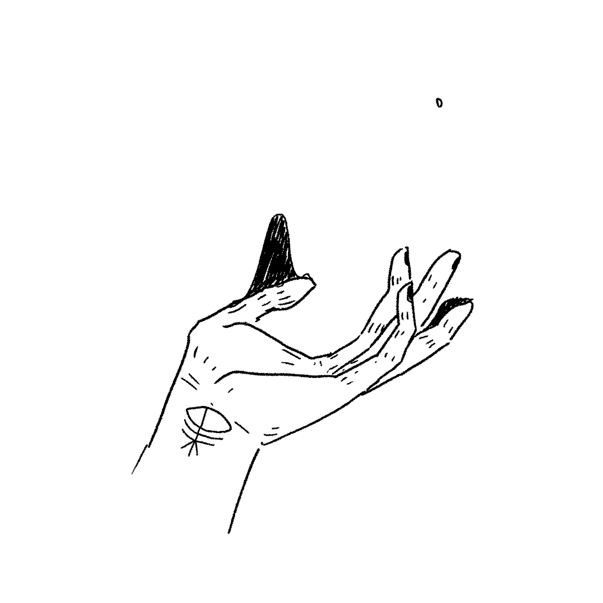

Magic Drawing
Changing width, height and postion of a square in Realtime
NOTE - Get your left and right wrist closer
to reduce the size of the square and to increase the size of
the square keep your left and right wrist far from each other.
Move you nose to move the square